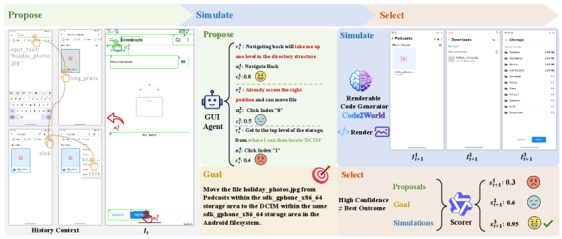

TL;DR
把 next visual state 预测转成 renderable code generation。构造 AndroidCode，把 GUI 轨迹翻译成高保真 HTML，并用视觉反馈 revision；训练先 SFT 冷启动格式与布局，再用 Render-Aware RL，以渲染结果的视觉语义一致性和动作一致性为 reward。 AndroidCode 超 80K 高质量 screen-action pairs；Code2World-8B 在 next UI prediction 上表现顶级，接近 GPT-5 和 Gemini-3-Pro-Image；作为下游导航辅助，使 Gemini-2.5-Flash 在 AndroidWorld navigation +9.5%。
⚠️ 数值主要按论文/技术报告/综述自报口径整理，未声明为第三方独立复现。
0. 论文定位卡
| 路线 | World Model |
|---|---|
| 环境 | Simulated / learned world model |
| 动作空间 | 真实 GUI action + 世界模型中的虚拟 action transition |
| 奖励信号 | world-model rollout 成功率、真实环境校准和轨迹可执行性 |
| 优化方式 | model-based RL / synthetic rollout |
| 读表口径 | ⚠️ 数值主要按论文/技术报告/综述自报口径整理，未声明为第三方独立复现。 |
先看这张卡可以避免误读：GUI Agent RL 论文经常把“模型能力”“环境系统”“奖励设计”“数据生成”混在一起讨论。这里把它拆成环境、动作空间、奖励信号和优化方式四个轴，方便判断论文到底贡献在哪里。
1. 框架图与读图指南

读图顺序
- 先看输入端：当前 UI 状态、历史动作和任务指令；状态可以是截图、DOM、可访问性树或可渲染代码。
- 再看中间模块：训练 action-conditioned world model，让模型预测动作后的下一界面、DOM、截图或可渲染代码。
- 接着看反馈回路：由预测状态是否支持完成任务、真实环境校准结果或后续轨迹成功率给出，这一项如何回到策略、价值函数、reward model 或数据筛选器。
- 最后看输出端：真实或模拟的 click/type/scroll/API call；世界模型学习动作之后界面如何变化；这决定论文结果到底是在单步 grounding、完整 trajectory 还是系统吞吐上成立。
读这类图不要只看模块名，要沿着 observation → action → reward/update 的方向追踪数据流。只要能指出 reward 或 verifier 是在哪里产生的、又如何回到策略更新，就基本抓住了论文的核心。
2. 要解决的问题
GUI 世界模型需要既有高视觉保真，又有结构可控。纯文本或纯像素预测往往不能同时满足。
换成 GUI agent 的语言，这个问题通常落在三件事上：界面状态部分可观测、正确反馈稀疏且延迟、静态示范无法覆盖真实软件变化。论文的价值就在于把这些问题中的一个或多个转成可训练的闭环信号。
如果只用 SFT 或行为克隆，模型学到的是“在数据集截图上下一步该怎么点”；而 GUI Agent 真正部署时会遇到状态漂移、异步加载、误点回退、任务参数变化和界面版本变化。本文所属路线试图回答的是：如何让模型从环境反馈、可验证标签或合成轨迹里继续改进，而不是停留在一次性模仿。
3. 任务形式：输入、动作、奖励
| 观察 | 当前 UI 状态、历史动作和任务指令；状态可以是截图、DOM、可访问性树或可渲染代码。 |
|---|---|
| 动作 | 真实或模拟的 click/type/scroll/API call；世界模型学习动作之后界面如何变化。 |
| 奖励 | 由预测状态是否支持完成任务、真实环境校准结果或后续轨迹成功率给出。 |
这个表是读 GUI Agent RL 论文最重要的入口：只要弄清楚模型看到了什么、能做什么、奖励从哪里来，就能判断它是算法贡献、环境贡献、奖励贡献还是系统贡献。
4. 训练闭环怎么跑
- 收集真实 GUI 轨迹或网页交互日志，得到 state-action-next state 三元组。
- 训练 action-conditioned world model，让模型预测动作后的下一界面、DOM、截图或可渲染代码。
- 在世界模型里做 dream rollout / MCTS / synthetic trajectory generation，低成本探索多条路径。
- 把模拟中筛出的高质量轨迹用于策略微调，再用少量真实环境校准 sim-to-real gap。
这条闭环是理解论文的主线。无论它叫 GRPO、DPO、AEPO、MCTS、world model 还是 semi-online，最终都要把“模型输出的动作”转换成“可执行状态变化”，再把状态变化转换成“可训练信号”。
5. 方法与架构怎么跑
- Code2World 不直接生成像素图，而是生成可渲染代码，例如 HTML/CSS/布局结构，再渲染成下一 UI。这样状态更可解释，也更容易检查和编辑。
- 训练先用 SFT 学会格式和布局，再用 Render-Aware RL。reward 来自渲染后的视觉语义一致性、动作一致性和下一状态是否符合真实轨迹。
- 代码状态可以被 diff、验证和复用，比黑箱图像生成更适合作为 agent 训练环境。
5.1 把下一屏预测变成可渲染代码生成
Code2World 不直接生成像素图，而是生成可渲染代码，例如 HTML/CSS/布局结构，再渲染成下一 UI。这样状态更可解释，也更容易检查和编辑。
它构造 AndroidCode，把 GUI 轨迹转换成高保真 HTML，并通过视觉反馈 revision 改善渲染质量。
5.2 Render-Aware RL
训练先用 SFT 学会格式和布局，再用 Render-Aware RL。reward 来自渲染后的视觉语义一致性、动作一致性和下一状态是否符合真实轨迹。
模型因此学的不只是页面长什么样，还要学动作会怎样改变界面。
5.3 为什么结构化世界模型有优势
代码状态可以被 diff、验证和复用，比黑箱图像生成更适合作为 agent 训练环境。
局限是 GUI 中很多动态效果、原生控件和复杂交互不容易用 HTML 完整复刻。
因此，这篇论文不是简单地“让大模型点屏幕”，而是围绕 observation-action-reward 契约重写训练闭环：先让动作可执行，再让反馈可验证，最后让策略能从成功和失败中更新。
5.4 关键中间变量
读方法时要特别盯住中间变量：轨迹是按 step 存、按 episode 存，还是按候选动作组存？奖励是只在终局出现，还是每一步都有 progress？模型更新时用的是整条轨迹的相对优势、单步坐标误差、偏好对，还是 value/Q head？这些细节决定了论文能否处理长任务和稀疏奖励。
5.5 为什么这种设计能解决原问题
核心逻辑是把原本不可微、不可直接监督的 GUI 成功条件拆成更接近训练信号的形式：要么用规则/verifier 把成功自动判出来，要么用 reward model 学过程进展，要么用世界模型/搜索生成更多成功轨迹，要么用层级结构把几十步任务拆成几个短子目标。
6. 训练、奖励与数据流
- 世界模型路线先学习环境动力学，再在模型中做 dream rollout、MCTS 或轨迹合成，最后回到真实环境校准。
读实验时要特别注意 reward 口径：有的论文评估单步坐标，有的评估整条任务成功，有的只报告系统吞吐或数据合成质量。不同口径不能直接相加或横向混算。
7. 关键设计与创新点
- 用可学习环境模型替代部分真实 GUI rollout，把慢速 I/O 变成高速模拟采样。
这些创新点的共同目标，是把 GUI 交互从一次性 prompt 调用变成可迭代优化的训练系统。
8. 实验怎么读
AndroidCode 超 80K 高质量 screen-action pairs；Code2World-8B 在 next UI prediction 上表现顶级，接近 GPT-5 和 Gemini-3-Pro-Image；作为下游导航辅助，使 Gemini-2.5-Flash 在 AndroidWorld navigation +9.5%。
| 项目 | 口径 | 指标 | 结论/注意事项 |
|---|---|---|---|
| 主 benchmark | AndroidWorld / AndroidLab / AITW | 任务成功率 / grounding accuracy / 系统吞吐 | AndroidCode 超 80K 高质量 screen-action pairs；Code2World-8B 在 next UI prediction 上表现顶级，接近 GPT-5 和 Gemini-3-Pro-Image；作为下游导航辅助，使 Gemini-2.5-Flash 在 AndroidWorld navigation +9.5%。 |
| 对照基线 | SFT、BC、prompting、闭源 VLM 或同尺寸开源模型 | 相同任务口径下比较 | 不同论文的环境和任务集合不同，不能把数值直接跨表相加。 |
| 可信度 | 作者自评或综述转述 | ⚠️ / 待核 | ⚠️ 数值主要按论文/技术报告/综述自报口径整理，未声明为第三方独立复现。 |
这类实验通常需要同时看三组数字：第一是任务成功率或 grounding accuracy；第二是与 SFT、BC、prompting、GPT-4V/闭源模型或开源基线的对比；第三是环境成本，例如 rollout 速度、样本数量、标注成本和并行规模。
尤其要避免一个常见误读：ScreenSpot/grounding accuracy、WebArena success rate、AndroidWorld task success、OSWorld desktop success、world-model rollout speed 不是同一个指标。本文页面保留原论文或综述的原始口径，不把它们强行换算。
9. 常见误读
- 不要把世界模型里的成功路径当成真实网页/真实设备必然可执行，必须看真实环境校准。
- 读 Code2World: GUI World Model via Renderable Code Generation 时，应先确认它报告的是作者自评、技术报告结果还是第三方 benchmark 结果。
10. 复现或落地时要准备什么
- 先固定 action schema，并写一个能把模型输出解析成真实 GUI 操作的 adapter。
- 准备 verifier：至少要能判断终局成功；如果是 grounding 论文，还要能计算坐标/区域奖励。
- 世界模型必须保留真实环境校准集，持续检查 sim-to-real gap，而不是只看模拟成功率。
如果只能先复现一小部分，建议优先复现 action schema、verifier 和一组可重置任务；没有这三件事，后续 RL 指标很难可信。
11. 局限与读法
- 世界模型会产生 sim-to-real gap；虚拟页面里可行的动作不一定能在真实环境复现。
在 GUI Agent RL 谱系中，它属于“绕过真实环境 I/O wall”的路线：用模型化的数字世界降低采样成本，再服务真实策略训练。
和参考站的可信度规则一致，本页把作者自评、技术报告自报和综述转述都按 ⚠️ 处理；只有基准维护方统一评测或第三方复现才适合当作更强证据。
来源
本页依据 GUI Agent RL 综述、论文摘要/公开页面和站内总报告整理；数值优先保留论文自报口径，未做第三方复现实验。参考站体例来自具身智能学习站的论文细读页面，例如 RT-2 与 SimpleVLA-RL 细读。